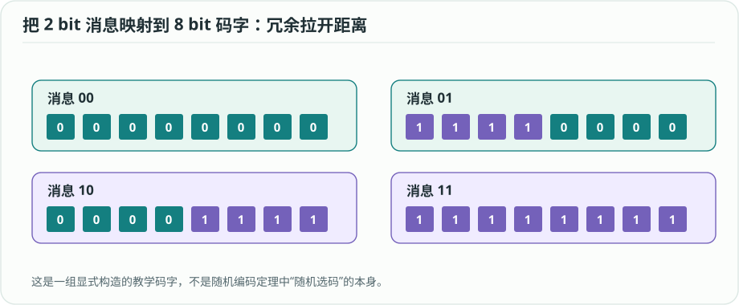

噪声存在，为什么仍能让完整消息的错误概率趋近零？
若每个发送比特都有 10% 的概率被翻转，“发送一个比特就决定一个消息”不够可靠。更好的方法是把一条较短的消息索引映射成长度更长、彼此差异明显的码字，然后接收端根据整个带噪序列估计发送了哪一个码字。
增加冗余的代价是每次信道使用携带的新信息更少，但好处是接收端能利用整体结构纠正一部分错误。信道编码定理回答的是：能否在保持正的渐近传输速率的同时让块错误概率接近零？
码率 R 不是“每秒发送多少字节”
令消息集合有 M 个可能值，编码器将每个消息映射为 n 次信道使用组成的码字，译码器从 Yⁿ 猜测消息索引。以 2 为底时，码率为 R=(log₂M)/n bit/次信道使用。对二进制线性 (n,k) 码，若有 M=2ᵏ 个消息，则 R=k/n。

“消息”是编码器要区分的 M 种选择；码字中的某个特定位不一定直接对应消息的某一位。译码器选择整条消息而不是独立判断每个码字比特。
可达性：R<C 时好码存在
对固定 DMC，令 C=maxₚI(X;Y)。Shannon 信道编码定理的可达性部分保证：对每个严格小于 C 的目标速率 R，存在一列长度趋于无穷的编码–译码方案，其实际码率趋近至少 R，并且平均块误码概率趋于 0。
例如 BSC(0.1) 的容量约为 0.531 bit/次，目标 R=0.30 在可达区域内；但不能直接断言“任何长度 100 的码率 0.3 码都很可靠”，因为构造方式、译码算法和有限块长都会影响误码率。
随机编码证明到底随机了什么？
可达性证明的一条经典路线是：从合适的输入分布 p*(x) 独立抽样生成 M 条长码字，公开码本给发送方与接收方，然后用典型性或最大似然相关方法进行解码。在随机码本与信道噪声的联合分布下，上界估计误码概率；若平均错误概率很小，则必然存在至少一个固定的码本，其表现不差于平均值。
因此，“随机编码”是证明存在性的工具，不意味着真实系统每次发送消息都要重新随机生成整个码本。也不能因为一个随机生成的小码本表现差，就认定定理错误：可达性强调足够大的 n 和跨码本平均的存在结论。
反方向：为什么超过容量就不可能渐近无误差？
令消息 M 均匀分布，译码后为 M̂，块错误概率为 Pₑ。利用 Fano 不等式和数据处理不等式，可以对剩余消息不确定性作下界。对无记忆信道有 I(M;Yⁿ)≤nC，且 H(M)=log₂M=nR：
这个不等式使用 h₂(Pₑ)≤1 且 M≥2。若 R>C 固定，随着 n 增大，右边收敛到严格正值，从而 Pₑ 不可能趋于 0。这是弱逆定理层面的论证；更强的“错误概率趋于 1”需要强逆定理，不能误称由以上简单不等式就能推出。
重复码：一个容易看见却无法达到容量的办法
把一个信息位重复 3 次，接收端多数投票。如果每位翻转概率 p 独立，至少翻转两次才译错，所以 Pₑ=3p²(1−p)+p³。对于 p=0.1，错误概率从原来的 0.1 降到 0.028，但传输速率从 1 降到 1/3。
只适用于奇数长度多数表决和独立比特翻转；它不会达到容量定理的正速率极限。
定长小码本的穷举误码计算
对仅 4 个消息、长度 8 的码本，可以枚举所有 2⁸ 种二元噪声向量，按每一种噪声概率加权，计算最近汉明距离译码器的精确平均块错误率。这不是随机构造证明，有限码本的结果也不能冒充渐近上界。
from examples.channel_coding import exact_bsc_block_error
codewords = (
"00000000", "11110000",
"00001111", "11111111",
)
error = exact_bsc_block_error(codewords, 0.1)
assert 0 < error < 1
print(f"R=0.25, exact average block error={error:.6f}")译码规则在距离相等时按码本索引最小者打破平局；每条消息等概率。若你改变码本，精确误码率一般也会改变。下一章将用线性代数提供一类具有清晰构造规则的纠错码。
什么是定理保证，什么是工程工作？
信道容量是给定噪声模型下的渐近极限。构造可高效编码与译码的码、满足延迟和功耗约束、估计实际信道并控制同步与帧错误，仍然是独立的工程任务。高于容量在渐近意义下不可能实现误码趋零，低于容量也不代表你随便写个算法就自动可靠。
来源与延伸阅读
- Shannon (1948), A Mathematical Theory of Communication：噪声信道可靠编码的存在性思想。
- MIT 6.441 (2016)，Chapter 14 Channel Coding：随机编码、可达性及逆定理。
- MIT 6.441 (2010) Lectures 10–13：典型解码与 Fano 不等式。